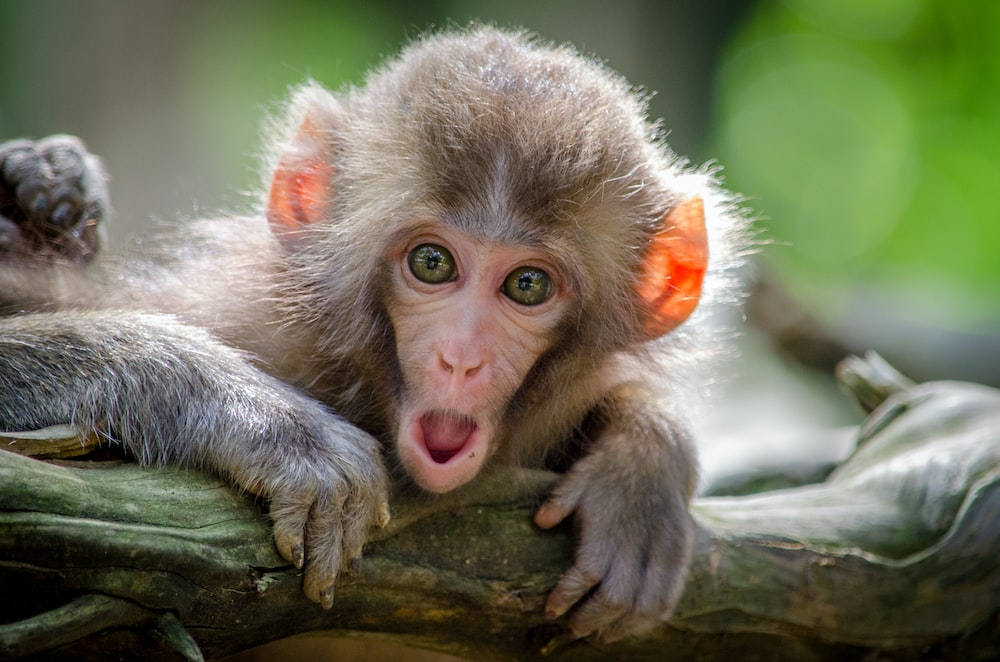

Bears
Bears are mammals that belong to the family Ursidae. They can be as small as four feet long and about 60 pounds
 Bear details
Bear details
Bears are mammals that belong to the family Ursidae. They can be as small as four feet long and about 60 pounds
Bear details
The tallest land mammal, with a neck as long as 6 feet, the giraffe is also well known for the unique brown and white pattern on its coat
Lions have strong, compact bodies and powerful forelegs, teeth and jaws for pulling down and killing prey
 lion details
lion details
Most species are arboreal, using all four limbs to leap from tree to tree. They can sit upright and stand erect.
 monkey detailsAlligators have a long, rounded snout that has upward facing nostrils at the end; this allows breathing to occur while the rest of the body is underwater.
 Alligator details
Alligator details